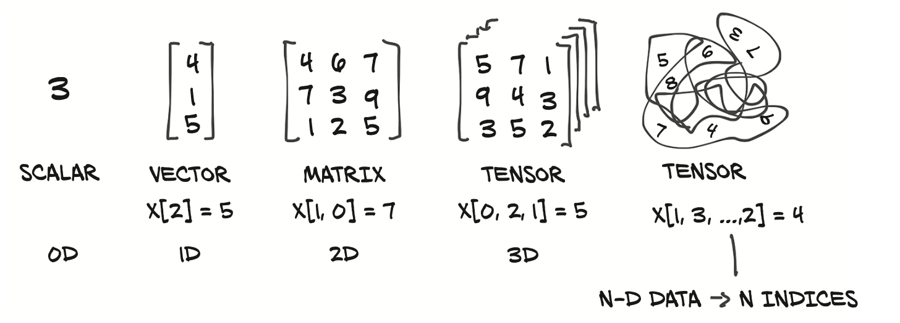

import torch
torch.manual_seed(1234)
torch.__version__'1.13.0.dev20220611'PyTorch is a Python-based open source and scientific computing package for building neural networks. It is dynamic graph-based framework that allows you to define your neural network in a way that is easy to understand and debug. Today, PyTorch is the most used deep learning framework and mostly use by researchers and engineers.
PyTorch support GPU acceleration (making your code run faster) behind the scenes, better than NumPy. PyTorch also provides Autograd for automatic differentiation, which means that your code is automatically differentiated and you can use it to do backpropagation
Before you installed Pytorch, you need to install the following dependencies: Package Manager (e.g. pip, conda), Python, Numpy. For more information, please refer to the Pytorch documentation.
For me, I am using mac and conda as package manager, I therefore run the following command
To verify your installation works,
import torch
torch.manual_seed(1234)
torch.__version__'1.13.0.dev20220611'Assume we have 3 bedrooms, 1 carpark and 2 bathrooms. We can represent this data numerically in a form of vector [3, 1,2] to describe bedrooms, carpark and bathrooms
Tensor are the standard way of representing data in Pytorch, such as text, images, and audio. Their job is to represent data in a numerical way.


There are many Python Data Structure for holding data including Python List and Numpy Array. List and Numpy Array operations are similar to Pytorch Tensor.
Let us remember the basic of data structures in Python (List and Numpy Array) before we start using Pytorch Tensor
Python does not have built-in support for Arrays, but Python Lists can be used instead.
Using our previous example, we can create a list of Python lists below.
a_list = [3, 1,2] #A list is the Python equivalent of an array
print(a_list) # print the list
print((type(a_list))) # print the type
print(a_list[0]) # subset the list[3, 1, 2]
<class 'list'>
3However, Python lists has the following limitations: It takes large memory size and slow.
Numpy solved the problems with List:
Size - Numpy data structures take up less space
Performance - they have a need for speed and are faster than lists
Functionality - SciPy and NumPy have optimized functions such as linear algebra operations built in.
import numpy as np
a_numpy = np.array([1,3,4]) # creating a numpy array
a_numpyarray([1, 3, 4])type(a_numpy) # nd arraysnumpy.ndarraya_numpy[0] # we can subset similar to Python list1a_numpy.shape # shape of the nd array(3,)a_numpy.dtype # dtype of the nd arraydtype('int64')a_numpy.size # size of the nd array3import numpy as np
import time
size_of_vec = 1000
def pure_python_version():
t1 = time.time()
X = range(size_of_vec)
Y = range(size_of_vec)
Z = [X[i] + Y[i] for i in range(len(X)) ]
return time.time() - t1
def numpy_version():
t1 = time.time()
X = np.arange(size_of_vec)
Y = np.arange(size_of_vec)
Z = X + Y
return time.time() - t1
t1 = pure_python_version()
t2 = numpy_version()
print(t1, t2)
print("Numpy is in this example " + str(t1/t2) + " faster!")0.00019288063049316406 0.0005578994750976562
Numpy is in this example 0.3457264957264957 faster!Tensors are generalization of vectors and matrices to an arbitrary number of dimensions.

Similar to how Numpy provides additional support not available in the Python list, so also Tensors provides support not available in Numpy array such as:
GPU acceleration , which is a great advantage for deep learning,
distribute operations on multiple devices or machines,and
keep track of the graph of computations that created them ( usefull for backpropagation).
Various operations are available on tensors. In the next sections, we will discuss the following operations:
Creating tensors.
Operations with tensors.
Indexing, slicing, and joining with tensors Computing gradients with tensors.
Using CUDA/MPS tensors with GPUs.
torch.tensoris a general Tensor constructor that infer the data type automatically.
import torch
a_random = torch.tensor((3,4)) # Create a random tensor
print(a_random)tensor([3, 4])print(a_random.shape) # print the shape of the random tensor
print(a_random.size()) # print the size of the random tensor
print(type(a_random)) # print the type of the random tensor
print(a_random.type()) # print the type of the random tenstorch.Size([2])
torch.Size([2])
<class 'torch.Tensor'>
torch.LongTensorNote: .shape is an alias for .size(), and was added to closely match numpy !
torch.tensor to automatically determine the data type, you can explicitly specify the type of the data type by using the torch.type parameterimport torch
a_random = torch.tensor((3,4), dtype= torch.float) # Create a random tensor
print(a_random)tensor([3., 4.])print(a_random.shape) # print the shape of the random tensor
print(a_random.size()) # print the size of the random tensor
print(type(a_random)) # print the type of the random tensor
print(a_random.type())torch.Size([2])
torch.Size([2])
<class 'torch.Tensor'>
torch.FloatTensora_torch = torch.tensor([1, 2, 3])
print(a_torch.type()) # Tensor typetorch.LongTensorWe can change from LongTensor t:
a_short = a_torch.short() # Convert to short,
a_float = a_torch.float() # Convert to float()
print(a_short.type()) # Tensor type
print(a_float.type()) # Tensor typetorch.ShortTensor
torch.FloatTensorNote: A variant of
torch.tensorconstructor istorch.FloatTensorconstructor. When use, the default tensor type isFloatTensor. Infact, torch.Tensor is an alias for thetorch.FloatTensorconstructor.
a_random = torch.Tensor((3,4)) # Create a random tensor
b_random = torch.FloatTensor((3,4)) # Create a random tensor
print(a_random.type())
print(b_random.type())torch.FloatTensor
torch.FloatTensorI would recommend to stick to
torch.tensor, if you would like to change the type, you can change
Torch defines 10 tensor types with CPU and GPU variants: See different Pytorch Data Types:
The most common type (and generally the default) is torch.float32 or torch.float. This is referred to as “32-bit floating point”.
But there’s also 16-bit floating point (torch.float16 or torch.half) and 64-bit floating point (torch.float64 or torch.double).
The reason for all of these is to do with precision in computing. Precision is the amount of detail used to describe a number.
The higher the precision value (8, 16, 32), the more detail and hence data used to express a number.
This matters in deep learning and numerical computing because you’re making so many operations, the more detail you have to calculate on, the more compute you have to use.
So, lower precision datatypes are generally faster to compute on but sacrifice some performance on evaluation metrics like accuracy (faster to compute but less accurate).
Similar to the numpy, we can create a tensor from a random number.
a_random_torch = torch.randn(2, 3) # uniform random distribution numbers between 0 and 1
# a_numpy_rand = np.random.randn(2,3) #numpy random normal distribution
print(a_random_torch)
# print(a_numpy_rand)tensor([[ 0.0461, 0.4024, -1.0115],
[ 0.2167, -0.6123, 0.5036]])a_random_torch = torch.rand(2, 3) # random normal distribution
# a_numpy_rand = np.random.rand(2,3)
print(a_random_torch)
# print(a_numpy_rand)tensor([[0.7749, 0.8208, 0.2793],
[0.6817, 0.2837, 0.6567]])a_same_scalar = torch.zeros(3,3)
print(a_same_scalar)
print(a_same_scalar.size())tensor([[0., 0., 0.],
[0., 0., 0.],
[0., 0., 0.]])
torch.Size([3, 3])torch.ones(3, 3) # torch.ones(size=(3, 3)) tensor([[1., 1., 1.],
[1., 1., 1.],
[1., 1., 1.]])Any PyTorch method with an underscore (_) refers to an inplace operation;
a_zero = torch.zeros(2, 3)
print(a_zero)
print(a_zero.fill_(5)) # inplace operation
print(a_zero) # a_zero is now filled with 5tensor([[0., 0., 0.],
[0., 0., 0.]])
tensor([[5., 5., 5.],
[5., 5., 5.]])
tensor([[5., 5., 5.],
[5., 5., 5.]])###4: Creating and initializing a tensor from lists
a_list = torch.tensor([1, 2, 3])
a_listtensor([1, 2, 3])torch.from_numpy to create a tensor from a numpy array.import numpy as np
numpy_array = np.random.rand(2, 3)
numpy_array
torch_tensor = torch.from_numpy(numpy_array) # tensor from numpy array
torch_tensortensor([[0.3487, 0.9072, 0.8480],
[0.7245, 0.6970, 0.4976]], dtype=torch.float64)torch_tensor.type()'torch.DoubleTensor'float64,You can always convert from PyTorch tensors to Numpy arrays using the numpy function torch.numpy().
torch_tensor.numpy()array([[0.3487288 , 0.90720583, 0.84795941],
[0.72447844, 0.69699952, 0.49759155]])# Use torch.arange(), torch.range() is deprecated
zero_to_ten = torch.arange(0, 10)
zero_to_tentensor([0, 1, 2, 3, 4, 5, 6, 7, 8, 9])# Can also create a tensor of zeros similar to another tensor
ten_zeros = torch.zeros_like(input=zero_to_ten) # will have same shape
ten_zerostensor([0, 0, 0, 0, 0, 0, 0, 0, 0, 0])Named Tensors allow users to give explicit names to tensor dimensions.
In most cases, operations that take dimension parameters will accept dimension names, avoiding the need to track dimensions by position.
torch.zeros(2, 3, names=('N', 'C'))/var/folders/1h/b7ng0kgj3w78mg7n8k7q7rch0000gn/T/ipykernel_11570/697701580.py:1: UserWarning: Named tensors and all their associated APIs are an experimental feature and subject to change. Please do not use them for anything important until they are released as stable. (Triggered internally at /Users/runner/work/_temp/anaconda/conda-bld/pytorch_1654931446436/work/c10/core/TensorImpl.h:1489.)
torch.zeros(2, 3, names=('N', 'C'))tensor([[0., 0., 0.],
[0., 0., 0.]], names=('N', 'C'))names to access tensor dimensions.imgs = torch.randn(1, 2, 2, 3 , names=('N', 'C', 'H', 'W'))
imgs.names('N', 'C', 'H', 'W')imgs.names[0]'N'Tensor has many properties including the following properties: the number of dimensions, the size, the type:
We can find the tensor dimensions using:ndim
# Scalar
scalar = torch.tensor(7)
scalar
scalar.ndim0MATRIX = torch.tensor([[1,2,3,4],
[5,6,7,8]])
MATRIX.ndim2You can tell the number of dimensions a tensor in PyTorch has by the number of square brackets on the outside ([) and you only need to count one side of the brackets.
In practice, you’ll often see scalars and vectors denoted as lowercase letters such as y or a. And matrices and tensors denoted as uppercase letters such as X or W
In deep learning, data (images, text, video, audio, protein structures, etc) gets represented as tensors.
A model learns by investigating those tensors and performing a series of operations (could be 1,000,000s+) on tensors to create a representation of the patterns in the input data.
After you have created your tensors, you can operate on them like you would do with traditional programming language types, like +, , *, /.
Indexing and subsetting a tensor is similar to indexing a list.
some_list = list(range(6))
torch_list = torch.tensor(some_list)
torch_listtensor([0, 1, 2, 3, 4, 5])print(torch_list[0]) # first element of the tensor
print(torch_list[1]) # second element of the tensortensor(0)
tensor(1)torch_list[1:4] # subsetting a tensortensor([1, 2, 3])Transposing 2D tensors is a simple operation using t
points = torch.tensor([[4.0, 1.0], [5.0, 3.0], [2.0, 1.0]])
pointstensor([[4., 1.],
[5., 3.],
[2., 1.]])points_t = points.t()
points_ttensor([[4., 5., 2.],
[1., 3., 1.]])You can also transpose 3D and higher tensors using the transpose method by specifying the two dimensions along which transposing (flipping shape and stride) should occur:
some_t = torch.ones(3, 4, 5)
transpose_t = some_t.transpose(0, 2)
print(some_t.shape)
print(transpose_t.shape)torch.Size([3, 4, 5])
torch.Size([5, 4, 3])Tensor view operations returns a new tensor with the same data as the self tensor but of a different shape.
x = torch.randn(2, 2)
print(x)
print(x.size())tensor([[-0.4790, 0.8539],
[-0.2285, 0.3081]])
torch.Size([2, 2])y = x.view(4)
print(y)
print(y.size())tensor([-0.4790, 0.8539, -0.2285, 0.3081])
torch.Size([4])Using
-1in the shape argument will automatically infer the correct size of the dimension.
z = x.view(-1, 2) # the size -1 is inferred from other dimensions
print(z)
print(z.size())tensor([[-0.4790, 0.8539],
[-0.2285, 0.3081]])
torch.Size([2, 2])View Does not change tensor layout in memory, Transpose() operation change the tensor layout in memory.
Tensor addition is achive using torch.add as shown in the following example:
# Create a tensor of values and add a number to it
tensor = torch.tensor([1, 2, 3])
tensor + 10tensor([11, 12, 13])# Multiply it by 10
tensor * 10tensor([10, 20, 30])# Subtract and reassign
tensor = tensor - 10
tensortensor([-9, -8, -7])PyTorch also has a bunch of built-in functions like torch.mul() (short for multiplcation) and torch.add() to perform basic operations.
# Can also use torch functions
tensor = torch.tensor([1, 2, 3])
torch.multiply(tensor, 10) # multiply by 10tensor([10, 20, 30])tensor = torch.tensor([1, 2, 3])
torch.add(tensor, 20) # add by 20tensor([21, 22, 23])torch.div(tensor, 20, rounding_mode='trunc') # divide by 20, with truncation as a rounding_modetensor([0, 0, 0])torch.div(tensor, 20, rounding_mode='floor') # divide by 20, with floor as a rounding_modetensor([0, 0, 0])torch.sum(tensor) # sum tensor entries [1, 2, 3]tensor(6)In deep learning algorithms (like neural networks), one of the most common operations is matrix multiplication.
PyTorch implements matrix multiplication functionality in the torch.matmul() method.
The main two rules for matrix multiplication to remember are:
The inner dimensions must match:
The resulting matrix has the shape of the outer dimensions:
Note: “@” in Python is the symbol for matrix multiplication.
More information about matrix multiplication can be found in the Matrix Multiplication section.
tensor1 = torch.randn(3, 4)
tensor2 = torch.randn(4)
print(tensor1.shape)
print(tensor2.shape)torch.Size([3, 4])
torch.Size([4])result = torch.matmul(tensor1, tensor2)
result.shapetorch.Size([3])Note: The difference between element-wise multiplication (multiply) and matrix multiplication (matmul) is the addition of values.
matmul: matrix multiplication
multiply: element-wise multiplication
tensor = torch.tensor([1, 2, 3])
tensor.shapetorch.Size([3])Element-wise matrix mutlication
tensor * tensortensor([1, 4, 9])Matrix multiplication
torch.matmul(tensor, tensor)tensor(14)Can also use the “@” symbol or torch.mm() for matrix multiplication, though not recommended
print(tensor @ tensor)
print(tensor.matmul(tensor))tensor(14)
tensor(14)A matrix multiplication like this is also referred to as the dot product of two matrices. Neural networks are full of matrix multiplications and dot products.
For example, torch.nn.Linear() module (we’ll see this in action later on), also known as a feed-forward layer or fully connected layer, implements a matrix multiplication between an input x and a weights matrix A.
\[ y = x\cdot{A^T} + b \]
Thank you for reading !